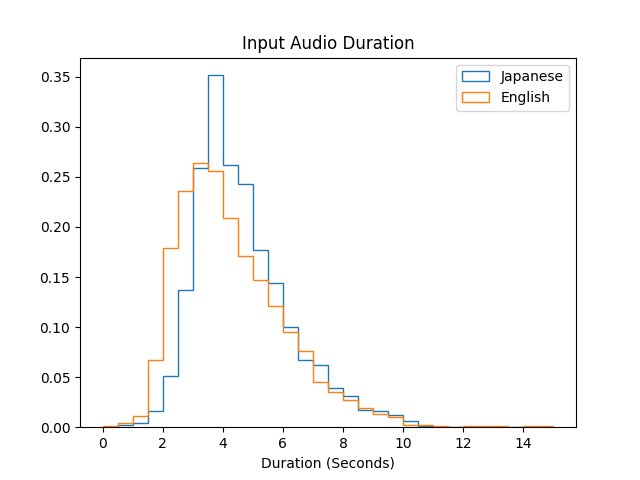

Summary
- Deep learning classification of Japanese and English audio
- Audio conversion to mel spectrograms
- Convolutional neural network on mel spectrograms
- Hyperparameter tuning for optimization
- Classification accuracy of 95%
Background
The goal of this project is to use deep learning and classify audio into two different languages, English and Japanese. Language classification, and audio classification in general, is a topic that is used is many applications, including IoT devices, translators, and more. As the world becomes more connected the need for natural langugage processing (NLP) is becoming more and more necessary. This project will go over through some of the fundamental principals of audio classification when building a model.
Data
Collection
For this project a large set of labeled audio is needed to train. Originally a series of audio books was used to train the model. This was supplemented by open source audio books from aozora and librivox. One issue when training from audiobooks is that all samples of audio from the book have similar features. For example, if all Japanese audio came from one book and all English from another, then a machine learning model would not have to learn the languages but instead would only have to learn the voice of the speaker or the tone. This would hinder generalization to other audio sources. The audio source was then changed to the Common Voice corpus which provides a large variety of audio clips from people in different languages. At the time of testing, the English audio consisted on 2200 hours of audio, and the Japanese 46 hours.
Data Cleaning
The raw audio needs to be standardized. Some of the audiobooks are at different volumes, rates, lengths, and channels. Longer audio has to be cut down and shorter audio needs to be padded with silence. To minimize both of these, the distribution of audio length of the first 1000 samples was looked at.  I chose 4.0 seconds as the clip length to convert audio to. This is nearly in the center of both languages. To better augment the data, the padding was randomly split between the front and the end of the audio, and the cuts were taken at random locations for each sample. For each clip, I then performed the following to further standardize:
- Resampling to 22050 hz using tfio.audio.resample
- Normalizing the sample values to fall between 0 and 1
- Combine all channels into one channel
Preprocessing
Because of the length and the quantity of the audio files, it would not be feasible to load all of the samples at once for training. Therefore, data generators were built to load one batch of audio at a time. A generator class was subclassed from the keras.utils.Sequence class in tensorflow. This class takes in a pandas dataframe with the file paths and outputs batches of mel spectrograms for the model to use. The generator loads a preprocessing class that performs the cleaning as stated in the previous section. It then converts the audio to a spectrogram using Short-time Fourier transform. The number of fft points, window size, and hop length need to be chosen carefully. If chosen poorly, the output spectrogram will be too small and will not be able to be run through the model. It may also result in audio sections being counted more frequently than others or some not being counted at all. The values were varied slighty when treated as hyperparameters later. This resulting spectrogram was then converted to a log-mel-spectrogram, a system more useful for differentiating human speech. The resulting spectrogram is then used as the input to the model.
Model
A deep learning convolutional neural network (CNN) was used as the model. The input is a 2D mel-spectrogram and the output is a binary classifier, The model consists of 6 convolutional layers and 6 pooling layers. The ouput of the CNN head was flattened and fed into a dense layer before being fed into the output layer.
- Conv2D + MaxPooling2D, 16 filters, 3\(\times\)3 kernel
- Conv2D + MaxPooling2D, 32 filters, 3\(\times\)3 kernel
- Conv2D + MaxPooling2D, 64 filters, 3\(\times\)3 kernel
- Conv2D + MaxPooling2D, 128 filters, 3\(\times\)3 kernel
- Conv2D + MaxPooling2D, 265 filters, 3\(\times\)3 kernel
- Conv2D + MaxPooling2D, 512 filters, 3\(\times\)3 kernel
- Flattening
- Dense layer, 1024 nodes
- Dropout layer, 20%
- Output layer, 1 node
Results
printResults()